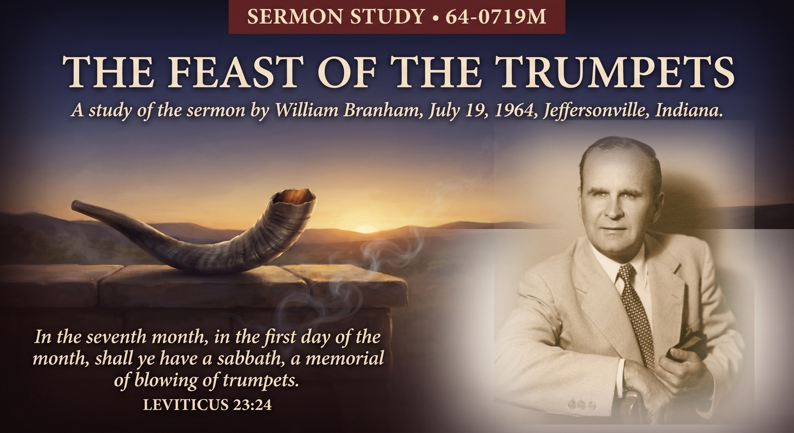

William Branham · July 19, 1964 · Branham Tabernacle, Jeffersonville, Indiana
♫ Listen to or read the full sermon at Voice Of God Recordings →

This sermon almost didn't happen the way it was planned. Brother Branham had been anticipating preaching the seven trumpets of Revelation for some time, but he tells the congregation plainly that the Holy Spirit would not release him to do it. Two days before this service, he says, he went into a room and asked God directly what was holding him back. What came back was not permission to preach the trumpets after all, but the reason he'd been stopped: the seven trumpets belong to Israel, not to the church, and preaching them as though they applied to a Gentile congregation would have blurred a line scripture draws carefully.
Rather than open Revelation, Brother Branham takes the congregation back to Leviticus 23:23-25, the Feast of Trumpets itself, a memorial of blowing trumpets in the seventh month, a holy convocation. He pairs it with two passages from Isaiah, chapters 18 and 27, where a trumpet sounding gathers scattered Israel back to her own land. The feast was never just a ceremony. It was a summons, and the whole sermon is built on figuring out exactly who is being summoned, and when.
Brother Branham frames this teaching as the next piece in a sequence he'd already laid out: first the seven church ages, then the seven seals, and now, finally, the seven trumpets of Revelation. But he draws a sharp distinction here that the whole message hinges on. The church ages and the seals concern the church, from Ephesus to Laodicea, the Gentile Bride being called out. The trumpets, he insists, are a different mechanism entirely, aimed at a different people. Revelation 4 through 19, he points out, has no mention of the church at all. That silence is the whole argument: if the church is absent from those chapters, the trumpets that sound within them cannot be addressed to her.
The distinction he draws is between Israel being called back to a rejected atonement, and the Bride already being called out before that happens. Every trumpet in Revelation 8 and 9, in his reading, sounds during a period of Jewish persecution, most immediately in the horror of the twentieth century, which he ties directly to the two hundred thousand horsemen loosed under the sixth trumpet in Revelation 9:16. He connects that number, soberly, to the persecution under Hitler and Stalin, understanding it as judgment falling on a people who had rejected their own Messiah, while the Bride, called by an entirely different sign, is spared that particular trial altogether.
What ties the whole message together is a parallel he draws between the Gentile church and Israel in the last days: each has its own appointed callers. The Gentile Bride is called by the ministry of Malachi 4's promised messenger, out of denominational tradition and back to the original Word. Israel, Brother Branham teaches, will be called by the two witnesses of Revelation 11, whom he identifies as Moses and Elijah returning, prophets calling a prophet-believing people, since Israel has always recognized her prophets even when she rejected everything else.
The sermon's real weight sits in what this ordering protects. If the trumpets applied to the church, then the church would be walking through the same tribulation and persecution reserved for a nation that rejected its Messiah, which Brother Branham says plainly contradicts what he understands scripture to promise the Bride. Getting the recipient of a prophecy wrong, in his reading, isn't a small interpretive slip. It changes who is being warned, who is being protected, and what a listener should actually expect to walk through before the end.
Source: The Feast Of The Trumpets, preached July 19, 1964. Text © Voice Of God Recordings. This study reflects my own understanding of the message as a believer, not a verbatim reproduction of the sermon.
← Back to Sermon Studies